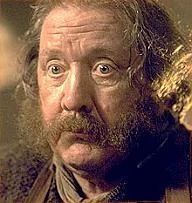
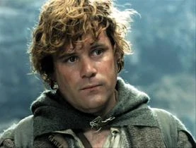
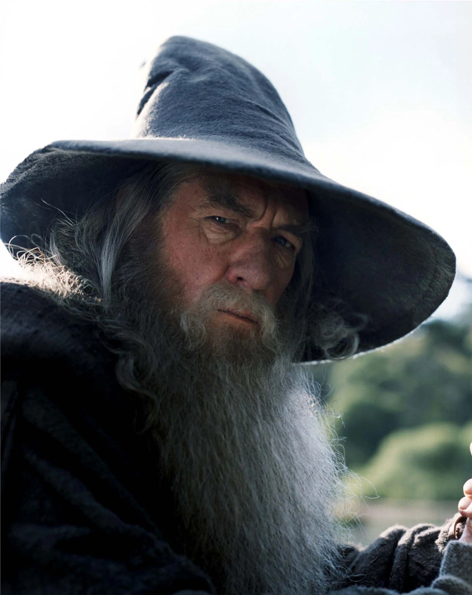

Target Audience
We aim to connect the good residents of The Shire to the businesses here in the shire. This means we are here to help those who need services and goods and those who provide services and goods.
The Bartender
The bartender is one who has heard a great many things. He wears out his days serving those who come into his pub, and cleaning up after their large messes. Here he can connect with those who provide the ale, or advertise to others that he has the finest drinks in the shire.
The Hobbit
A simple hobbit who lives within his means among the good folk of the shire. He lives a simple life, and gardening is his hobby. His friend is the adoptive child or nephew (its not really clear) of a famous hobbit who ventured out of the shire on a grand adventure with some dwarfs and a mysterious man. He is a gardener and loves his job. Here he can find the best provider for his pipeweed or find the best foods for his wedding.
The Traveler
A wise and powerful, and mysterious travler from a far off land. He has many contacts among the nations of middle earth and beyond. He may seek to free peoples from an oppressive evil being who is years old and raising an army, or he may seek after the demise of a dragon which lives in a mountain. Regardless, he is on the search for a single person, or a group of small people who are just right for whatever task he may require of them to complete. Here he can find the right candidate for an exiting adventure.
The Dwarf
Far from home and always looking for a good drink and a great time, here the dwarf could find the finest brew available, a place to stay for the night, and a provider for the necessary rations to travel.